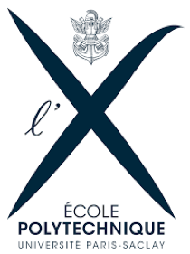
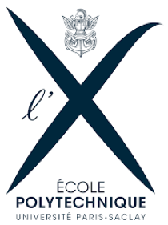

LUDOVIC
LUDOVIC LECONTE
LUDOVIC (2005-2008)
Laser Technical in Quantel
>>>>>>> a745c2a067f3a97459309adb9f25ccd2e892db56Assembly of medical lasers

Assembly of industrial fiber lasers
(2008-2010)
 

I joined the LULI2000 in September 2008 after leaving my permanent job at Quantel, a company specialized in lasers. After 3 years in this company and after having acquired a specialization in the field of medical and fiber lasers, I wanted to move towards research. Integrating the LULI also allowed me to acquire other knowledge in the field of lasers.The LULI is one of the very large research instruments and has an international reputation. It is equipped with the 2 largest civilian lasers (in laser power) in France, classified as large European instruments. International researchers use the laser chains to explore their themes in the field of Astrophysics. I worked at LULI2000, on the preparation of the beam shaping up to the experimental room. The researchers had particular demands on the pulse duration or the beam shaping before shooting a target to realize simulations, in an experimental chamber called MILKA. The LULI 2000 is composed of 4 laser chains, 2 of which are power lasers (NORTH and SOUTH) with single pulse neodymium glass. Each chain can deliver up to 1 kJ @ 1.053 µm in ns regime (nano2000 configuration).The repetition rate is limited to one shot every 90 minutes (between 4 and 6 "full energy" shots per day).
Laser amplification hall
Experimental room MILKA
Example of a sample (gold cavity)
The control room
(2005-2008)
Nadine Peyriéras' team has developed in the context of European projects an original methodology of observation by light microscopy and reconstruction of cellular dynamics in the embryonic morphogenesis of model organisms. The reconstruction of cellular dynamics during embryogenesis is the basis for coupling genetic, molecular and cellular processes. This challenge is also that of a new interdisciplinarity which implies an interaction between theorists and experimentalists, from the design of experimental protocols to the development of theoretical tools necessary for the reconstruction of data and their interpretation.
DSLM (Digital Scanned Light-sheet Microscopy)
DSLM Solidworks modeling of a new imaging chamber
Biphotons SP5
Optical design to couple two femto-second lasers on two SP5 in order to better distribute the power of the two lasers on both microscopes. It was possible to control independently the power arriving on the two microscopes via a software. To control the misalignment, it had sensors to check the power of the lasers by recording at each point of time the power variation.
(2013 until now)
I have been working for more than 5 years on the cell and tissue platform (PICT), coordinated by Dr Jean Salamero (DR CNRS), which gathers very sophisticated equipment and advanced technologies in electron and optical microscopy. The objective is to provide research groups within and outside the institute with advanced imaging approaches to study different themes at different scales of life (molecular and cellular scales, whole organisms and tissues in normal or pathological states).
The platform is heavily involved in the development of new hardware, applications and software solutions, so we participate in R&D activities. In addition, we organize teaching and also national and international training courses and workshops.
The Cell and Tissue Imaging Platform is a member of France BioImaging which is the national infrastructure for biological imaging, and is a member of the European consortium EuroBioImaging. The coordinator of the Institut Curie's cell and tissue imaging platform was Jean Salamero until 2018
The platform has prioritized contractual relationships with industry, which often lead to joint developments and gives research teams direct on-site access to new equipment before or as soon as they appear on the market. Strong partnerships have been established with Gattaca, based on joint developments, and with Nikon France and Europe B.V. Since 2007, the platform hosts and administers the Nikon Imaging Center @ Institut Curie - CNRS, one of nine such centers in the world and the only one in France.
I worked at the Institut Curie on the PICT-IBiSA imaging platform which offers more than 40 advanced optical microscopy systems (video microscopes, confocal, super resolution...)
One of my first missions was to train the users of the PICT-Lhomond on most of the systems. I intervene on these devices in case of breakdowns or problems of the users and I ensure the maintenance. I also participate in the maintenance and replacement/closing of these systems.
I was in charge of the confocal spinning disk microscopy park as well as more complex systems such as the light sheet microscopes or the N-SIM (Structured Illumination Microscopy from Nikon). I also trained and accompanied users on techniques such as FRAP or photoactivation and opened a microfluidic system on a spinning disk via a collaboration with Fluigent.
The PICT platform had identified the need for 4D imaging of new multicellular samples (spheroids and embryos of model organisms) among its users. This project, coordinated by Jean Salamero, was funded by the Labex CelTisPhyBio whose objective is to promote interdisciplinary projects to develop quantitative approaches based on the physical properties of single cells or at the level of their collective behavior in a multicellular model. The long term goal of these studies is to apply the results of this research to the etiology of cancers and to the development of new therapeutic approaches. On this project I worked in close collaboration with my colleague IR CNRS on the PICT platform.
To carry out my project, I had to choose the most suitable modality for my needs, draw up specifications and finally purchase all the components.
I then made a 3D model on Solidworks and developed a new imaging chamber adaptable to the type of sample and to two detections objectives
Light sheet microscopy has gained popularity in recent decades, but it is an idea that is more than a hundred years old. However, the quality and especially the thickness of the light sheet remained a technical constraint limiting the accessible resolutions. Eric Betzig, (one of the 2014 Nobel Prize in Chemistry, for the SPT, PALM and STORM approaches), became interested in light sheet microscopy in 2011 paper by Planchon et al. Nature methods). He sought to overcome this resolution constraint while retaining the advantages of light sheet microscopy to study dynamic processes at the subcellular scale. Betzig and colleagues first used a Bessel beam in a planar illumination configuration (Bessel plane illumination) that allowed a sample to be illuminated with light sheets thin enough to allow high-speed imaging and near-isotropic 3D resolution. The use of the Bessel beam differs from previous planar illumination techniques that were used, especially in developmental biology. When the light sheet is thicker, out-of-focus fluorescence excitation occurs, so the advantages of reduced photobleaching by light sheet approaches, are not fully exploited. A Bessel beam is a non-diffracting, self-correcting beam that is not subject to this broadening and is therefore uniformly thin. On this basis they then developed the "Lattice Light Sheet Microscope, LLSM", by combining Bessel beam illumination and Structured Illumination (SIM). The technology allows to visualize cellular processes with spatio-temporal performances impossible to reach with other fluorescence microscopy techniques such as: a 3D resolution of about 0.12 µm(x,y) and 0.3µm in Z and acquisition frequencies up to nearly 200 images per second (10gigas per time lapse) The LLSM has been used to capture dynamic images of mitochondria, intracellular vesicles or mitotic chromosomes in living cells.
The Curie Institute has decided to go through the "3I Early Adopter" program, a solution based on a signed agreement for the continuous improvement of the microscope and the after-sales service. It should be noted that to date (2021) there are only two LLSM systems in France open to users, ours and the one proposed on the Bordeaux Imaging Center, a platform with which we exchange and collaborate regularly. I have been designated as the project manager, from its implementation to its availability, in collaboration with César Valades-Cruz. I organized the preparation of the room dedicated to the LLSM.V1. After a specific training by the engineers of 3i and once the system in hand, I set up a planning of metrological tests suitable to validate the whole of the performances of the microscope (analysis of the beam, powers...). Numerous defects, computer bugs, as well as needs, opinions and proposals, could be identified and sent back to the 3i company as our contract obliged us to do. The resulting LLSM.V2 version was delivered, installed and finally validated by us in early 2019. It is important to note that LLSM imaging generates data that can exceed 1Tb per experiment/per day. This data flow/processing/analysis etc...., requires adapted IT solutions and resources. We have therefore acquired and deployed our storage/computing solution for processing in a "buffer server" directly connected to the microscope, while guaranteeing a link to the Institute Curie's data center.